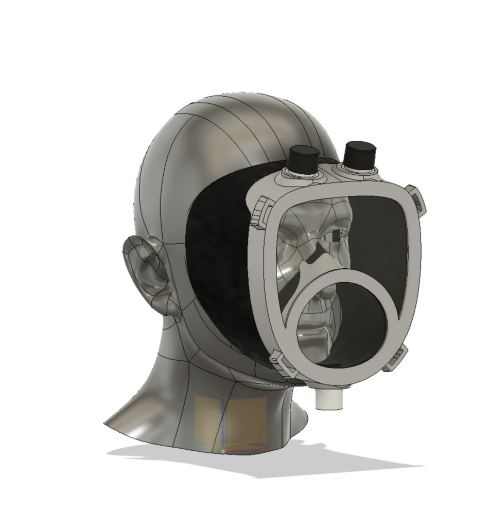

diseño
bases
La propuesta descrita a continuación busca poder atender con eficiencia el resguardo del personal de salud en tiempo de pandemia, a la ves contar con una herramienta testeada para el usuario común.
 Analizando el uso dado por los funcionarios de la salud, el excesivo numero de mascarilla desechables que se utilizan, y como alguna de estas soluciones no cumplen con las bases mínimas para la protección del personal, se crea la siguiente solución.
Analizando el uso dado por los funcionarios de la salud, el excesivo numero de mascarilla desechables que se utilizan, y como alguna de estas soluciones no cumplen con las bases mínimas para la protección del personal, se crea la siguiente solución.
solución
Mascara de tamaño medio creada en torno al rostro, restringiendo así al mínimo la infiltración de partícula. La mascarilla cuenta con la cavidad para la incorporación del filtro en su base, limitando el contacto de este con las partículas externas, sirviendo a su vez como escudo de dicho filtro, esto extendería la vida del filtro drásticamente. Cuenta con una doble materialidad, pudiendo incorporar filamentos flexibles y rígidos en la forma, adquiriendo las mejores cualidades de ambos elementos.
multimedia